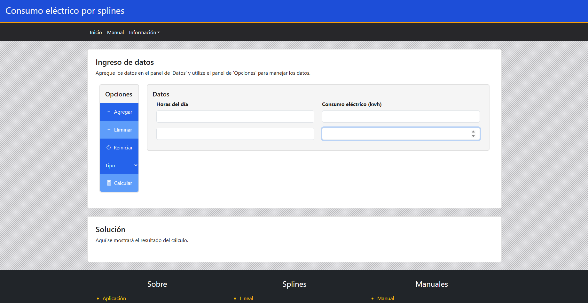
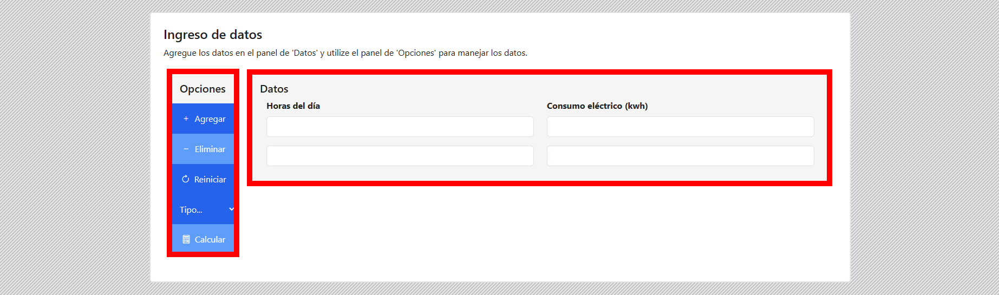
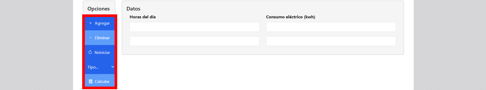
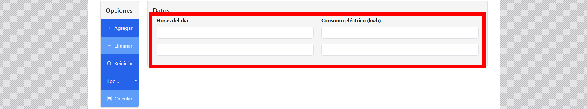
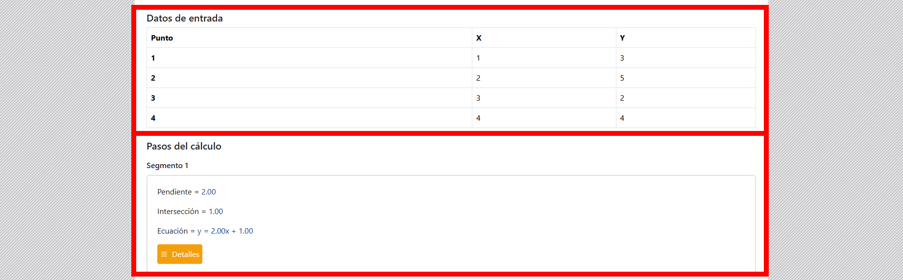
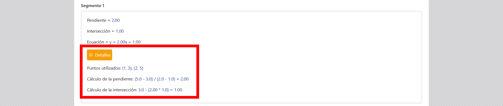
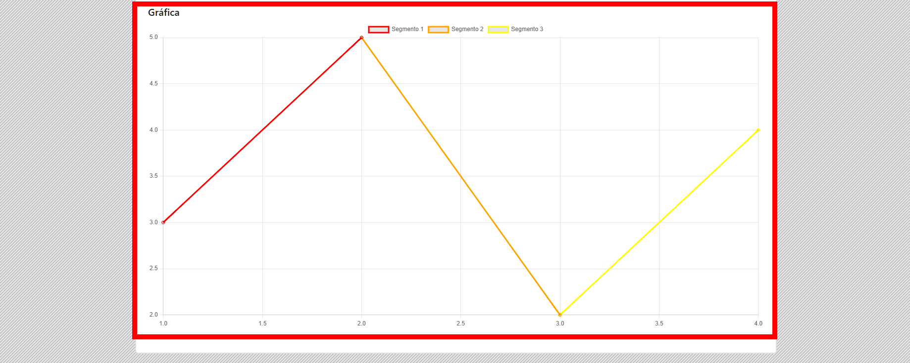

Esta es la vista de inicio.
Hay dos paneles. Uno de opciones y otro de datos.
En el lado izquierdo está el panel de opciones, ahí se puede agregar más datos, eliminarlos, reiniciar el formulario, seleccionar el tipo de spline a ejecutar y calcular.
Si se selecciona el tipo de spline en 'cuadrático', requiere como mínimo 3 filas de datos. Y si se selecciona en 'cúbico', se requiere como mínimo 4 filas de datos.
En el lado derecho está el panel de dato, ahí se escriben los datos para calcular la predicción del consumo eléctrico.
En la parte inferior en la página, está la sección de solución. En esta parte muestra la solución del cálculo cuando se da clic en el botón de 'calcular' del panel de opciones.
En solución se pueden ver el paso a paso realizado para resolver el spline. Se pueden ver los datos ingresados y las ecuaciones de los segmentos encontrados.
En cada uno de los segmentos hay un botón de 'detalles', en él se muestra los cálculos con más detalle.
Y en la última parte de la solución, se muestra la gráfica. En él hay botones interactivos que permite ocultar líneas del gráfico.
